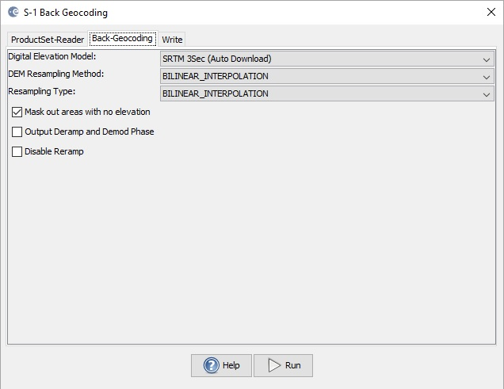

Sentinel-1 Back Geocoding
This operator co-registers two S-1 SLC
split products (reference and secondary) of the same sub-swath using the
orbits of the two products and a Digital Elevation Model
(DEM).
In resampling the secondary images into reference
frame, deramp and demodulation are performed first to the secondary image,
then the truncated-sinc interpolation is performed. Finally, the reramp
and remodulation are applied to the interpolated secondary image.
Input
- Before running this operator, user should first run S-1 TOPS
Split operator to both reference and secondary products to get the same
sub-swath and same polarization data for co-registration (e.g. IW1 -
VV).
- The user should run Apply Orbit File to correct the orbits in
both the split products with the Sentinel Precise (or Restituted) orbit
files. This step can be skipped if no precise or restituted orbit file
is available. Otherwise this step is always recommended in order to
achieve better co-registration result.
Output
- The output of the operator are the co-registered reference and secondary bands in I/Q format.
Parameters Used
- Digital Elevation Model (default:
Copernicus 30m Global DEM): The DEM used to compute the
co-registration geometry. The drop-down list in the dialog is the authoritative list of the DEMs
available in your installation. Alternatively select an external DEM file (see below). The Copernicus DEM
heights refer to the EGM2008 geoid. SNAP currently converts Copernicus heights using EGM96 (external DEMs always get EGM96 added, so they must hold heights above the EGM96 geoid); the difference from EGM2008 is mostly below 1 m but can reach a few metres in mountainous areas.
- External DEM: Path of a user provided DEM file, used instead of the DEM selected above.
- DEM No Data Value (default: 0): The value that marks missing elevation in the external DEM file.
- DEM Resampling Method: Interpolation method for obtaining elevation values
from the original DEM file. The following interpolation methods are available
- nearest neighbour
- bi-linear
- cubic convolution
- 5-points bi-sinc
- 11-points bi-sinc
- 21-points bi-sinc
- bi-cubic
- Resampling
Type: Interpolation methods for obtaining pixel values from the source
image. The interpolation methods available are the same as listed
above. The default is the 5-point bi-sinc interpolation. The 21-point truncated sinc interpolation
is more accurate for complex image interpolation, but takes longer processing time than the other methods.
With other interpolation method, however, some oscillation effect could
be introduced in the interpolated image and in the coherence image
generated later on.
- Mask out areas with no elevation: Checkbox indicating if
areas without elevation should be masked out from co-registration. It
is recommended to select this checkbox to avoid artefacts along the
coast in the co-registered images.
- Output Range and Azimuth Offset: Checkbox (default: off) indicating if the range and azimuth offsets
between the reference and secondary grids should be output as extra bands (
azOffset and
rgOffset, with the secondary suffix). Mostly useful for diagnostics.
- Output Deramp and Demod Phase: Checkbox indicating if deramp and
demodulation phases should be output as separated bands. This option is
mostly for debugging purpose and not recommended for most users.
- Disable
Reramp: Checkbox indicating if deramped and demodulated reference and
secondary bands should be output. This option is generally not necessary if
the
coregistered reference and secondary bands will be used in generating
interferogram. However, if this option is selected, we suggest you
disable the "Mask out areas with no elevation" option. This is because
the valid zeros in bands may be treated as invalid noDataValue and
causes problem in the later on processing.

References
- Sansosti, E., Berardino, P., Manunta, M., Serafino, F., Fornaro, G. (2006). Geometrical SAR image registration. IEEE Transactions on Geoscience and Remote Sensing, 44(10), 2861–2870. doi:10.1109/TGRS.2006.875787
- Yagüe-Martínez, N., Prats-Iraola, P., Rodríguez González, F., Brcic, R., Shau, R., Geudtner, D., Eineder, M., Bamler, R. (2016). Interferometric processing of Sentinel-1 TOPS data. IEEE Transactions on Geoscience and Remote Sensing, 54(4), 2220–2234. doi:10.1109/TGRS.2015.2497902
- Miranda, N. (2017). Definition of the TOPS SLC deramping function for products generated by the S-1 IPF. ESA technical note COPE-GSEG-EOPG-TN-14-0025, Issue 1, Revision 3, 10 January 2017.
Processing parameters (reference)
GPT operator: Back-Geocoding. Generated from the operator source; parameter names are those used in GPT and graph XML.
| Parameter | Type | Default | Allowed values | Unit | Description |
|---|
demName | String | Copernicus 30m Global DEM | | | The digital elevation model. |
demResamplingMethod | String | BICUBIC_INTERPOLATION | | | DEM Resampling Method |
externalDEMFile | File | | | | External DEM |
externalDEMNoDataValue | double | 0 | | | DEM No Data Value |
resamplingType | String | BISINC_5_POINT_INTERPOLATION | | | The method to be used when resampling the secondary grid onto the reference grid. |
maskOutAreaWithoutElevation | boolean | true | | | Mask out areas with no elevation |
outputRangeAzimuthOffset | boolean | false | | | Output Range and Azimuth Offset |
outputDerampDemodPhase | boolean | false | | | Output Deramp and Demod Phase |
disableReramp | boolean | false | | | Disable Reramp |
Background
Prerequisites
- Two or more Sentinel-1 SLC burst products with the same acquisition mode; debursted products are rejected.
- Each input must be a split product with one sub-swath, and all inputs must share the sub-swath and polarisation: run TOPS Split first.
- The selected DEM must be installed or downloadable.
- Recommended: Apply Orbit File on each split product (not checked in code).
Next step